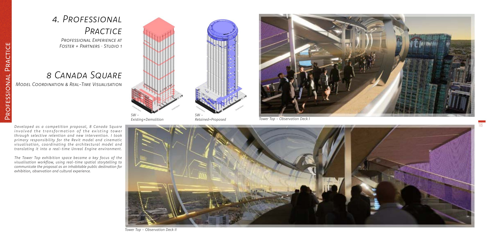

01
8 Canada Square
At Foster + Partners, I took primary responsibility for the Revit model and cinematic visualisation of a competition proposal, translating coordinated architectural information into a real-time Unreal Engine environment.
View project →